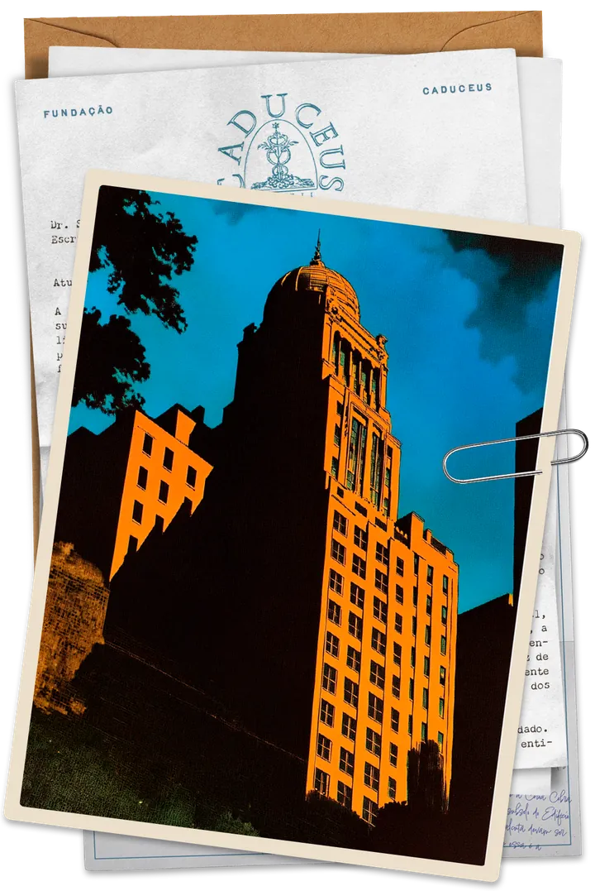
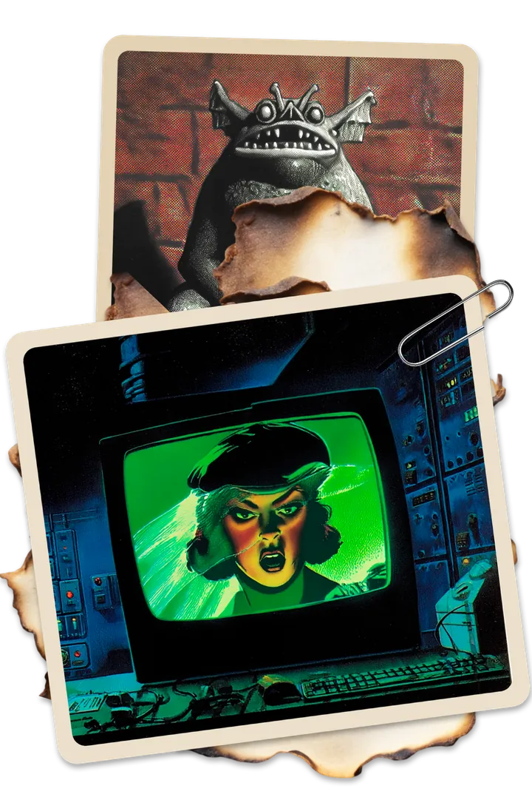
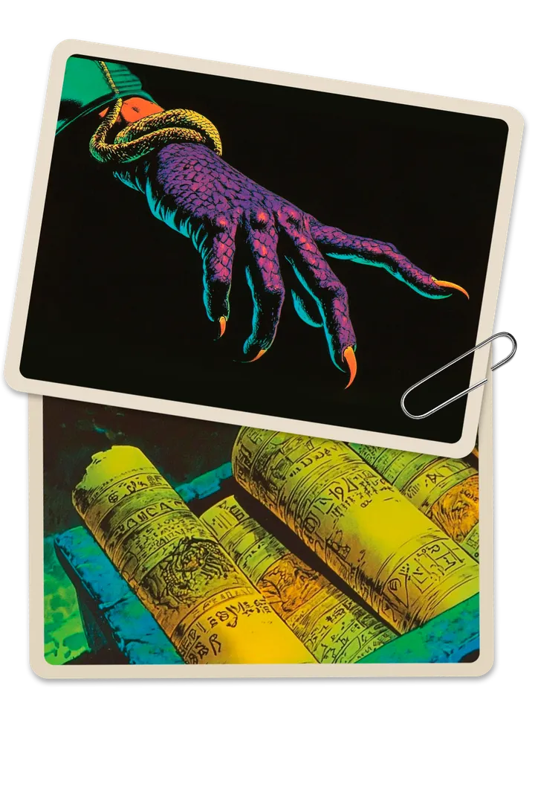
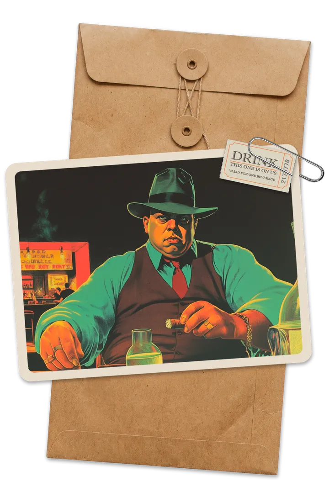
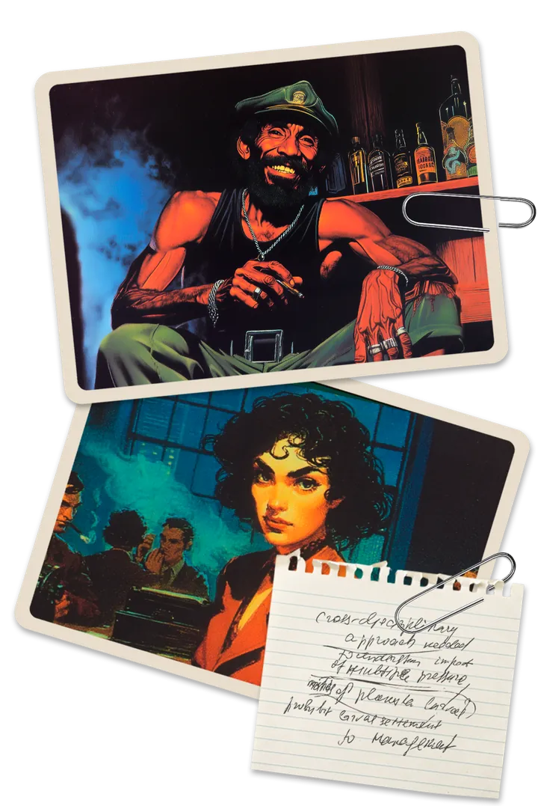
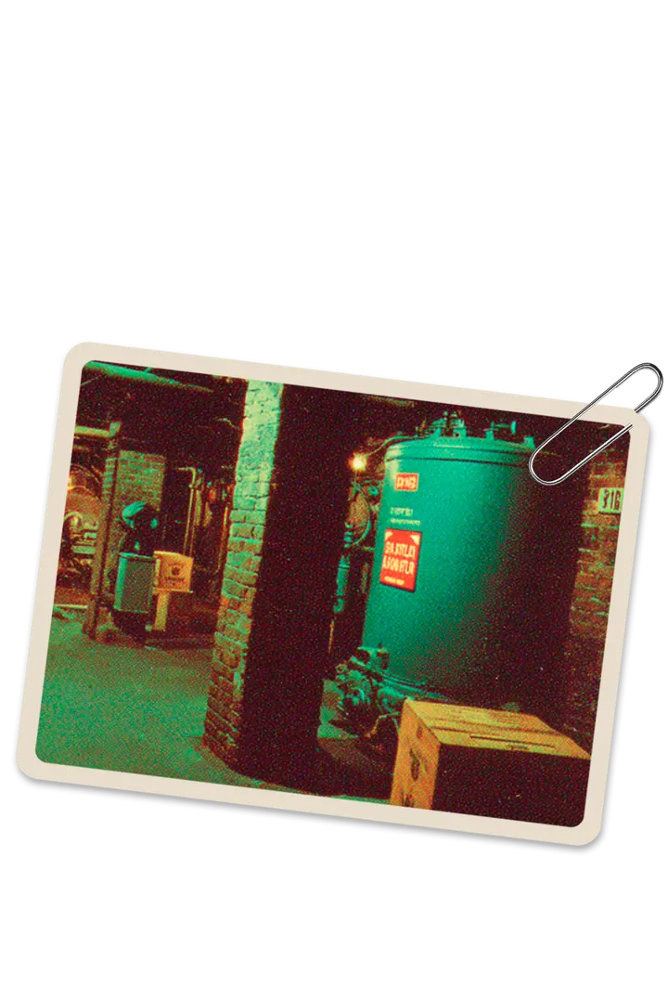
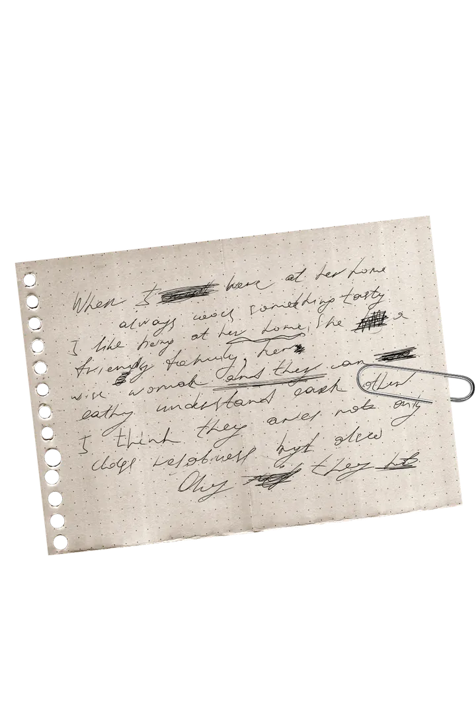
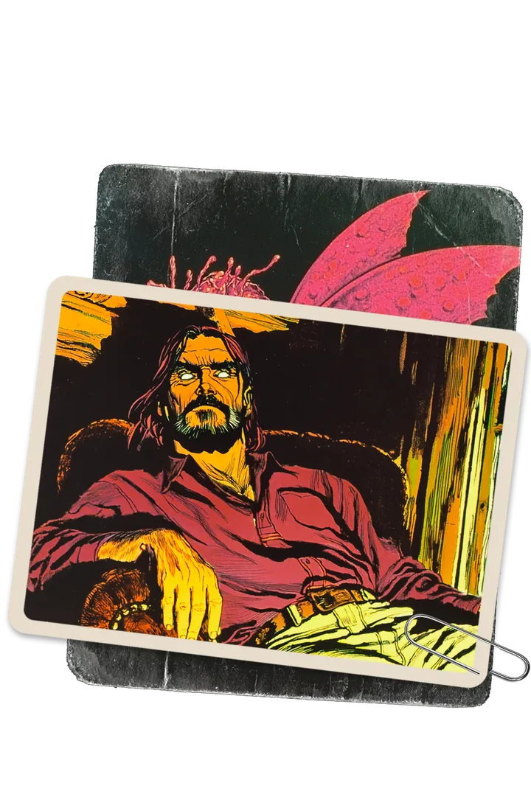
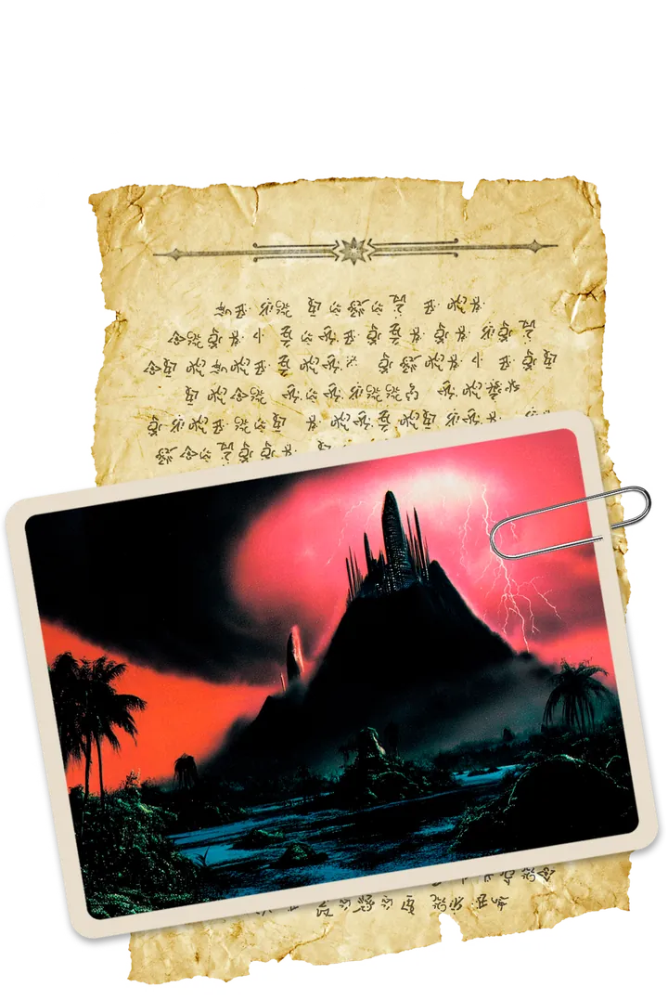

A Serpente de Duas Cabeças
A fundação de caridade é a fachada de um plano para escravizar a humanidade.
Pegar a ficha →
A seita extremista do povo serpente quer apagar a humanidade do mapa.
Pegar a ficha →
A feiticeira resgatada na Bolívia está solta, e não joga para nenhum dos lados.
Pegar a ficha →
A família Bonanno espera uma resposta, e ela está demorando muito...
Pegar a ficha →
Dois conhecidos do grupo sumiram depois de fazer perguntas sobre a Caduceus.
Pegar a ficha →
Há um andar abaixo do porão do Edifício Meadham que não aparece em lugar nenhum.
Pegar a ficha →
A Noite Interior invadiu a casa de campo da Caduceus e, pelo que o Hawkes lembra, saiu sem levar nada.
Pegar a ficha →
Algo vive no corpo do Zapata, e diz que agora os dois são um só.
Pegar a ficha →
Mu existiu. Uma guerra entre as serpentes o tirou do mundo, mas parece que as três facções ainda brigam por ele.
Pegar a ficha →
Bolívia, Bornéu, Oklahoma e Islândia: o que a Caduceus pediu em cada viagem, e o que o grupo encontrou lá.
Pegar a ficha →Carta do escritório da Caduceus em Santos sobre um portal no Brasil, com anotações à mão do Gonçalves.
Ver o documento →Restos de papéis da Noite Interior que o Zapata salvou do fogo num porão de Nova York.
Ver o documento →O que o Hawkes guardou de cabeça sobre um relatório da segurança da Caduceus que leu e devolveu.
Ver o documento →Pergaminhos de Mu que contam a história do continente e a guerra do povo serpente.
Ver o documento →A Bíblia reescrita do Kornfield e o diário de como ele voltou da morte.
Ver o documento →